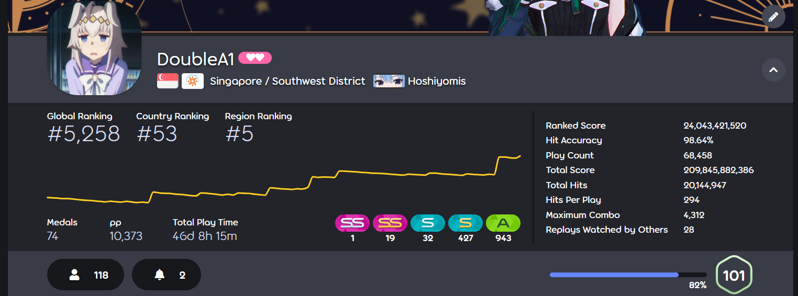

Hobbies
I have always believed that it is important to have some fun along side work!

osu!
As a player of this rhythm game for 6 years, I've developed valuable skills including:
- Perseverance: Overcoming skill plateaus through consistent practice
- Adaptability: Quickly mastering new beatmaps and playstyles
- Goal-setting: Breaking ranking improvements into achievable milestones

Bowling
My passion for bowling led me to join Singapore Polytechnic Bowling Club, where I've developed:
- Teamwork: Collaborating with teammates during tournaments and practice sessions
- Strategic Thinking: Analyzing lane conditions and adjusting techniques accordingly
- Sportsmanship: Maintaining composure whether winning or facing challenges
- Precision: Perfecting my form and release for consistent performance
- Resilience: Overcoming setbacks through focused practice